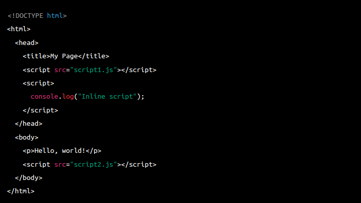

When a user enters an URL in the browser, the browser follows a series of steps to fetch the desired result:
- DNS Lookup: The browser first checks its cache to see if it already knows the IP address associated with the domain name. If it doesn't have it, the browser makes a DNS (Domain Name System) request to convert the domain name into an IP address.
- Establishing a CRendering web pagesonnection: Once the browser has the IP address, it opens a connection to the server at that address using the HTTP (Hypertext Transfer Protocol) or HTTPS (HTTP Secure) protocol.
- Sending the Request: The browser sends a request to the server for the specific resource requested, such as a web page or an image. This request includes information such as the HTTP method (GET, POST, PUT, etc.), the headers, and any data that needs to be sent along with the request.
- Receiving the Response: The server processes the request and sends back a response to the browser. This response includes the requested resource along with metadata such as the response code (200 for success, 404 for not found, etc.), headers, and any cookies that need to be set.
- Rendering the Page: Once the browser receives the response, it starts rendering the page by parsing the HTML, CSS, and JavaScript code and rendering the elements on the page.
What is the main functionality of the browser?
The main functionality of a browser is to allow users to access and view content on the World Wide Web (WWW) or other networks. Browsers act as a software interface between a user and the internet, interpreting HTML, CSS, and JavaScript code to display web pages, videos, images, and other types of content.
Here are some of the main functions of a browser
- Browsers fetch web pages from servers and render them in a way that is visually appealing and easy to navigate.
- Browsers provide users with tools to navigate the web, including forward and back buttons, tabs, bookmarks, and a URL bar to enter web addresses.
- Browsers protect users from security threats by warning them about potentially harmful websites and preventing malicious code from executing.
- Browsers allow users to add functionality to the browser by installing extensions and plugins, such as ad-blockers, password managers, and language translators.
- Browsers store information about visited websites, such as login information, and cache frequently accessed files to improve page load times.
High Level Components of a browser.
A browser is composed of several high-level components that work together to provide a rich web browsing experience. Here are the main high-level components of a browser
- The UI is the part of the browser that the user interacts with, such as the address bar, navigation buttons, and menus. The UI also includes the rendering engine, which interprets HTML, CSS, and JavaScript code and renders web pages.
- The browser engine is responsible for managing the interactions between the UI and the rendering engine. It controls the flow of data between the two components and coordinates the loading of web pages, managing requests, and responses.
- The rendering engine is responsible for rendering web pages into a format that can be displayed by the browser. It interprets HTML, CSS, and JavaScript code and transforms it into a visual representation that can be displayed in the browser window.
- The networking component handles all network requests made by the browser, such as fetching web pages, images, and other resources. It uses protocols such as HTTP and HTTPS to communicate with web servers and retrieve data.
- The JavaScript interpreter executes JavaScript code embedded in web pages, allowing them to perform dynamic and interactive behaviors.
- The storage component manages the storage of data used by the browser, such as cookies, cache, and user preferences.
These components work together to provide a seamless web browsing experience, allowing users to interact with web pages, access and share information, and perform various tasks online.
Rendering engine and its use.
A rendering engine is a software component that is responsible for interpreting HTML, CSS, and JavaScript code and rendering it into a visual representation that can be displayed in a web browser. The rendering engine takes the raw code of a web page and turns it into a graphical user interface that users can interact with.
Different browsers use different rendering engines. For example, Google Chrome and Opera use the Blink rendering engine, while Firefox uses the Gecko rendering engine, and Safari uses the WebKit rendering engine.
The rendering engine performs 'parsing HTML', 'applying CSS', 'executing Javascript'. Finally, the rendering engine renders the web page by displaying its visual elements, such as text, images, and multimedia, in the browser window.
The use of a rendering engine is critical for web browsing. Without a rendering engine, web pages would be displayed as raw HTML code, which would be difficult to read and navigate. The rendering engine allows users to interact with web pages in a graphical and intuitive way, providing a rich and engaging web browsing experience.
Parsers (HTML, CSS, etc)
Parsers are software components that are used to analyze and interpret code in different programming languages. In the context of web development, parsers are used to parse HTML, CSS, and other languages that are used to create web pages.
Here are some examples of parsers used in web development:
- The HTML parser is a software component that reads the HTML code of a web page and generates a Document Object Model (DOM) tree, which represents the structure of the web page. The DOM tree is then used by the rendering engine to display the web page in the browser window.
- The CSS parser reads the CSS code of a web page and generates a Cascading Style Sheets (CSS) object model, which represents the style rules of the web page. The CSS object model is then used by the rendering engine to apply the styles to the DOM tree and render the web page.
- The JavaScript parser reads the JavaScript code of a web page and converts it into executable code that can be run by the browser's JavaScript engine. The JavaScript parser is responsible for detecting syntax errors and other issues that could prevent the code from running properly.
Script Processors
Script processors are software components that execute scripts written in programming languages such as JavaScript, Python, or Ruby. In the context of web development, the most common script processor is the JavaScript engine, which is responsible for executing JavaScript code embedded in web pages.
The JavaScript engine parses the JavaScript code, generates an internal representation of the code, and then executes it. The execution process involves several stages, including lexical analysis, syntax analysis, code generation, and optimization.
Few examples of script processors are
V8, SpiderMonkey, Chakra etc.
Tree construction
Tree construction is the process of building a tree data structure that represents the hierarchical structure of an HTML or XML document. In the context of web development, tree construction is a critical component of the rendering engine, which uses the tree structure to render the web page in the browser window.
The tree construction process involves parsing the raw HTML or XML code of the web page and generating a tree structure that represents the structure of the document. The tree structure is called the Document Object Model (DOM) and consists of nodes that represent HTML or XML elements, as well as their attributes and content.
The tree construction process involves the following steps:
- The first step in tree construction is tokenization, where the raw HTML or XML code is broken down into a sequence of tokens. Tokens are elements such as tags, attributes, and text content.
- The next step is parsing, where the tokens are processed to generate a parse tree that represents the structure of the document. The parse tree is then converted into the DOM tree.
- In the final step, the DOM tree is constructed by creating nodes that represent the HTML or XML elements, attributes, and content. Each node in the DOM tree has a parent node and a set of child nodes that represent the hierarchical structure of the document.
The DOM tree is used by the rendering engine to render the web page in the browser window. The rendering engine applies CSS styles to the nodes in the DOM tree and then renders the content in the browser window according to the layout and styling rules defined by the web page.
Order of script processing
The order of script processing in a web page is determined by the position of the script tags in the HTML document. The browser processes the HTML document in a top-down manner, so scripts that appear higher up in the document are executed first, while scripts that appear lower down are executed later.
Here is an example of the order of script processing in an HTML document:
In this example, the browser will first process the script1.js file, followed by the inline script that logs a message to the console. This is because both of these scripts are located in the head section of the document, which is processed before the body section.
Next, the browser will process the body section of the document, which contains the "Hello, world!" text and the script2.js file. The script2.js file is executed after the text because it appears lower down in the document.
It's worth noting that scripts that are loaded asynchronously or dynamically using JavaScript can be executed out of order. This is because these scripts do not block the loading of the rest of the page and can be executed as soon as they are loaded, even if they appear lower down in the document. As a result, it's important for web developers to carefully manage the order of script processing to ensure that their scripts execute correctly and do not interfere with each other.
Layout and Painting
Layout and painting are two key steps in the rendering process that the browser goes through to display a web page on the screen.
Layout, also known as reflow, is the process by which the browser calculates the position and size of each element on the web page based on the styles applied to them. This includes the dimensions of the box that encloses each element, its position on the screen, and the placement of its content within the box. The layout process takes into account the dimensions of the viewport, as well as the size and position of any other elements on the page that may affect the layout. The layout process is expensive in terms of computation, and can be a bottleneck for performance, especially on complex web pages.
Once the layout has been calculated, the browser moves on to the painting phase. Painting is the process of filling in the pixels on the screen with the colors and images defined by the styles applied to each element. The painting process starts at the top of the page and proceeds downward, painting each element in turn. The painting process takes into account the visibility and stacking order of each element on the page, as well as any CSS effects such as transparency, shadows, and gradients.
The painting process also involves compositing, which is the process of combining the pixels of each element with the pixels of the elements below it in the stacking order to produce the final output on the screen. Compositing involves blending the colors and images of each element using techniques such as alpha blending and blending modes.
The layout and painting processes are complex and can involve a large amount of computation, especially on complex web pages with many elements and styles. To optimize performance, modern browsers use a variety of techniques such as caching, pre-fetching, and lazy loading to minimize the amount of work required for layout and painting, and to ensure that the web page is displayed as quickly and smoothly as possible.